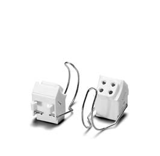
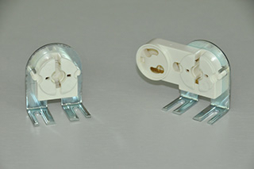
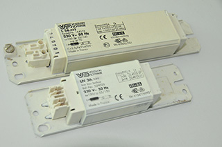

Светотехника
Дросселя и комплектующие
- Компания Vossloh-Schwabe
-
Компания Vossloh-Schwabe является одним из крупнейших в мире производителем компонентов для светотехники. С 2002 года входит в состав японского концерна Matsushita Electric Works Group. На предприятиях компании работают 1327 сотрудников.
Vossloh-Schwabe в течение многих десятилетий удовлетворяет запросы своих клиентов, предоставляя им свою высококачественную, отвечающую новейшим требованиям продукцию для различных областей применения. На предприятиях городов Люденшайд, Урбах, Камп-Линтфорт, Ошатц, Зарсина, Кольмар, Тунис, Бангкок, разрабатываются и изготавливаются:
- электронные и электромагнитные пуско-регулирующие аппараты,
- трансформаторы,
- конвертеры,
- зажигающие устройства,
- конденсаторы,
- патроны для ламп,
- принадлежности для светильников,
- светодиодные модули,
- роботы для соединения проводников и модули для тестирования.
Все заводы-изготовители сертифицированы согласно международному стандарту ISO 9001/14001, на них производится постоянная проверка качества и контроль производственных процессов. Vossloh-Schwabe поставляет своим клиентам во всем мире высококачественную продукции и этим завоевало прекрасную репутацию, как компетентный и надежный партнер.
- Ламподержатель для люминисцентных ламп
-

Ламподержатель G10q
Ламподержатель G10q производства Vossloh Schwabe, применяется в светильниках для кольцевых люминесцентных ламп с цоколем G10q типа T-R. Патрон имеет накидное на лампу и вставное крепление на поверхность, при помощи защелок на основании патрона. Патрон укомплектован крепежной скобой для лампы.
- Характеристики:
- Номинальный режим: 2А., 500В.
- Максимально допустимая температура 110ºС.
- Вес: 0,0084кг.
- Толщина стенки основания (для крепления патрона) должна быть до 1,2мм.
- Безвинтовые контактные зажимы для провода сечением 0,5-1мм².
- Корпус из поликарбоната имеет маркировку температуроустойчивости Т110.
Наименование Держатель для круглой лампы Ламподержатель G13
Компания "Vossloh Schwabe" является мировым лидером по производству и продажам комплектующих для светотехники. Особенностью ламподержателей является большой ротор из полибутелентерефталата, характеризующийся термоустойчивостью. Для обеспечения хорошего контакта и предотвращения искривления штырьков цоколя лампы, ротор снабжен специальными штырьковыми опорами.
Ламподержатель G13 производства Vossloh Schwabe, применяется в светильниках для люминесцентных ламп с цоколем G13 и имеет гнездо для установки стартера. ламподержатель имеет торцевое крепление (устанавливается на торец корпуса светильника), в основном используются в накладных и встраиваемых потолочных светильниках, крепятся к поверхности светильника с помощью защелок, в отверстия в корпусе/основании светильника.
- Характеристики:
- Номинальный режим: 2А., 500В.
- Максимально допустимая температура 130ºС.
- Вес: 0,0079кг.
- Установочные отверстия для монтажа должны быть Ø4,2мм. на расстоянии 26мм.
- Толщина стенки (для крепления патрона) должна быть до 1,2мм.
- Двойные безвинтовые контактные зажимы для провода сечением 0,5-1мм², на основании патрона.
Наименование Комплект держателей - Дросселя Vossloh Schwabe (Германия)
-

Дросселя Vossloh Schwabe (Германия) для обеспечения работы люминесцентных ламп, характеризуются надежностью, обладают отличными энергосберегающими свойствами. Дроссели Vossloh Schwabe производства Германия работают в сети с напряжением 220 В и представлены моделями различной мощности. Электромагнитный Пускорегулирующий Аппарат (ПРА) — дроссель (балласт) L 36, L58 используется для стабилизации и ограничения тока люминесцентных ламп.
- Характеристики:
- Предназначен для работы люминесцентных ламп мощностью 2х18Вт., 36Вт. и 40Вт, 58Вт. и 65Вт с цоколем G13, 2G10, 2G11, 2G13 и G10q;
- Рабочее напряжение питания: 220В.
- Частота сети: 50Гц.
- Ток зависит от типов подключаемых ламп и колеблется от 370мА до 430мА., L58 - 670мА
- Класс энергоэффективности: D.
- Компенсирующий конденсатор должен быть: 4мкФ., 6мкф
- Безвинтовые контактные зажимы для провода сечением 0,5-1,0мм²
- Расстояние между отверстиями для крепежа: 137мм., 180мм.
Описание: Электромагнитный балласт (дроссель) подключается последовательно с люминесцентной лампой. Параллельно лампе подключается стартер. Дроссель формирует за счёт самоиндукции запускающий импульс, а также ограничивает ток через лампу. Преимуществом электромагнитного балласта является простота конструкции, выдерживание скачков напряжений и невысокая цена. Недостатки: относительно долгий запуск, большее потребление энергии по сравнению с электронным балластом, возможен гул дросселя.
Наименование ном. Мощность Вт. Дроссель L36, 334 36 Дроссель L58, 352 58